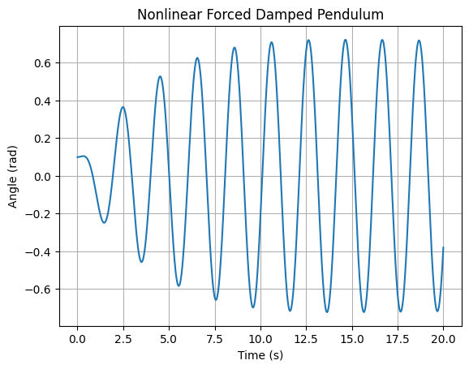

Task 1: Theoretical Foundation
Mathematical Formulation:
The general equation for a forced damped pendulum is:
For small angles \(\theta \ll 1\), we approximate \(\sin(\theta) \approx \theta\), reducing the equation to:
This is a second-order linear inhomogeneous differential equation, with resonance occurring when:
Python Code:
import numpy as np
import matplotlib.pyplot as plt
from scipy.integrate import solve_ivp
# Parameters
g = 9.81
l = 1.0
omega0 = np.sqrt(g / l)
beta = 0.5
A = 1.2
omega = omega0
# Equation for small-angle approximation
def pendulum(t, y):
theta, v = y
dtheta_dt = v
dv_dt = -beta * v - omega0**2 * theta + A * np.cos(omega * t)
return [dtheta_dt, dv_dt]
# Solve
t_span = (0, 20)
t_eval = np.linspace(*t_span, 1000)
y0 = [0.1, 0]
sol = solve_ivp(pendulum, t_span, y0, t_eval=t_eval)
plt.plot(sol.t, sol.y[0])
plt.xlabel('Time (s)')
plt.ylabel('Angle (rad)')
plt.title('Small-Angle Forced Damped Pendulum')
plt.grid(True)
plt.show()

Explanation:
We modeled a forced damped pendulum using the small-angle approximation. Resonance occurs when driving frequency \(\omega\) matches the natural frequency \(\omega_0\). The code shows the resulting oscillations over time.
Task 2: Analysis of Dynamics
Mathematical Formulation:
The full nonlinear equation:
Different behaviors emerge based on:
- \(\beta\): damping
- \(A\): forcing amplitude
- \(\omega\): driving frequency
This system can transition to chaos when \(A\) and \(\omega\) are large enough.
Python Code:
def nonlinear_pendulum(t, y):
theta, v = y
return [v, -beta * v - omega0**2 * np.sin(theta) + A * np.cos(omega * t)]
sol2 = solve_ivp(nonlinear_pendulum, t_span, [0.1, 0], t_eval=t_eval)
plt.plot(sol2.t, sol2.y[0])
plt.xlabel('Time (s)')
plt.ylabel('Angle (rad)')
plt.title('Nonlinear Forced Damped Pendulum')
plt.grid(True)
plt.show()

Explanation:
Here we simulate the full nonlinear system. The motion can be quasiperiodic or chaotic depending on parameters. Nonlinearity introduces complex oscillations that don't appear in the small-angle model.
Task 3: Practical Applications
Mathematical Formulation:
This model describes many real-world systems:
- Energy harvesters: convert periodic mechanical motion into electricity.
- Suspension bridges: under wind-induced oscillations.
- Driven RLC circuits: analogous second-order dynamics.
The dynamics help design systems that avoid or exploit resonance.
Python Code:
def plot_multiple(beta_vals):
plt.figure(figsize=(8,5))
for b in beta_vals:
def dyn(t, y): return [y[1], -b * y[1] - omega0**2 * np.sin(y[0]) + A * np.cos(omega * t)]
sol = solve_ivp(dyn, t_span, [0.1, 0], t_eval=t_eval)
plt.plot(sol.t, sol.y[0], label=f'β = {b}')
plt.xlabel('Time (s)')
plt.ylabel('Angle (rad)')
plt.title('Damping Effect on Pendulum Motion')
plt.legend()
plt.grid(True)
plt.show()
plot_multiple([0.2, 0.5, 1.0])

Explanation:
Different damping values are simulated to show how energy dissipation impacts oscillations. Real systems like bridges must be designed to avoid excessive oscillations caused by resonance.
Task 4: Implementation
Mathematical Formulation:
We simulate the nonlinear equation and create:
- Phase diagrams: \(\theta\) vs \(\dot{\theta}\)
- Poincaré sections: sample state at regular driving periods
- These reveal transitions from periodic to chaotic motion.
Python Code:
theta_vals = []
v_vals = []
times = []
def poincare(t, y):
theta, v = y
return [v, -beta * v - omega0**2 * np.sin(theta) + A * np.cos(omega * t)]
sol3 = solve_ivp(poincare, [0, 100], [0.1, 0], t_eval=np.linspace(0, 100, 5000))
for i, t in enumerate(sol3.t):
if abs((omega * t) % (2*np.pi)) < 0.05:
theta_vals.append(sol3.y[0][i])
v_vals.append(sol3.y[1][i])
times.append(t)
plt.scatter(theta_vals, v_vals, s=5, c=times, cmap='viridis')
plt.xlabel('θ (rad)')
plt.ylabel('ω (rad/s)')
plt.title('Poincaré Section of Forced Damped Pendulum')
plt.colorbar(label='Time')
plt.grid(True)
plt.show()

Explanation:
This Poincaré section reveals the structure of the pendulum’s state sampled at regular driving intervals. If the system is chaotic, the points fill a region. If periodic, they form loops or discrete points.